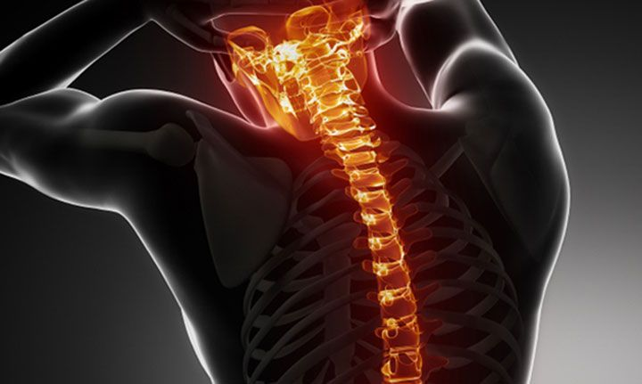
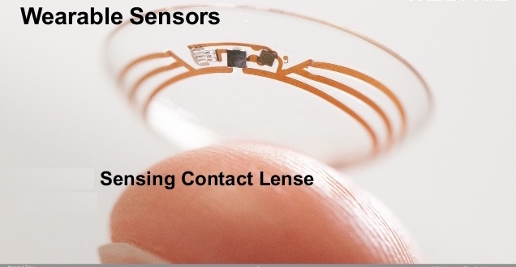
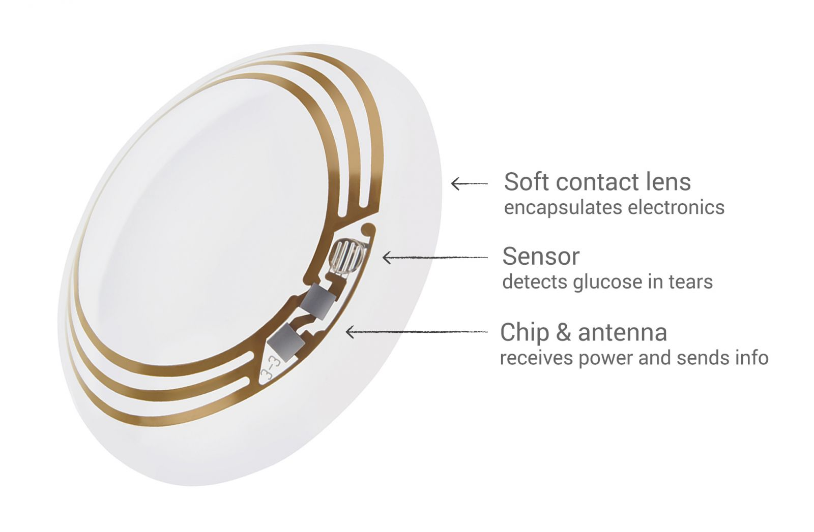
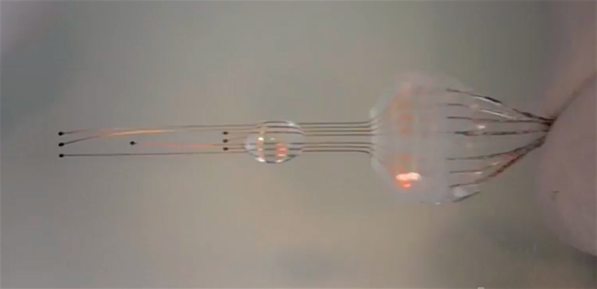
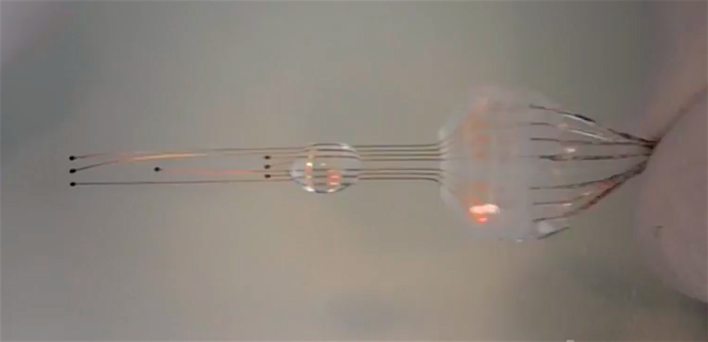
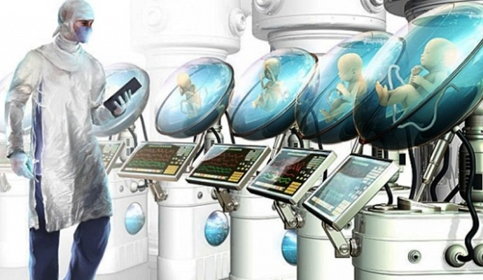
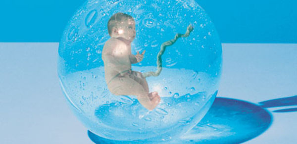

The future is upon us and in our reach. We can get there together.


Regenerative Repairs for Sports Injuries
Spring 2018
With new stem cell research, patients will now have the ability to self-repair with little to no physical therapy.
 
Sensory Contacts
Winter 2017
The development of contacts that will provide more than sight but include a monitoring system for diabetics
 

Implants for ExtraSensory Perception
Spring 2017
Implants will develop the sixth sense in humans and simicrants. It will heighten the subjects' clairvoyant abilities and possibility of telepathy in selective subjects.
It also has the ability to repair brain damage. The prosthetic implant works by bridging the gaps caused by brain injuries, which in turn facilitates repair.
 
Artificial Wombs
Spring 2017
The cost of infertility treatments may have been an issue for couples especially same-sex couples since insurance companies do not reimburse treatment costs for them. However, CYTECH, Inc. has another option outside of Intrauterine Insemination (IUI) In Vitro Fertilization (IVF), artificial insemination, and surrogacy. The process is called ectogenesis: raising a fetus outside the human body in an artificial womb.
We will be launching the campaign "Family for Everyone" with the introduction of the artificial womb. A new type of mechanical surrogate where everything will be monitored by doctors and machines so every embroyo gets the best nourishment. Artificial Wombs will simulate the environment of a women's wombs and play classical and jazz music at night.
Images/Material by - © Copyright 2016, CYTECH, Inc. All Rights Reserved